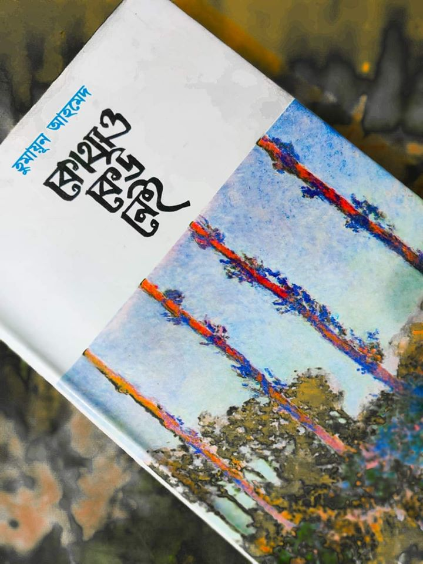

কোথাও কেউ নেই বইটির সাথে আমার পরিচয় মূলত আমার মায়ের মাধ্যমে। আমার মা এই বই অবলম্বনে নির্মিত নাটকটির অতিমাত্রায় ভক্ত। তাঁর মুখে যে বাকের ভাই, মুনা এই চরিত্রগুলির নাম অনেকবার শুনেছি । ছোটবেলা থেকে দীর্ঘদিন আমি আসাদুজ্জামান নূরকে বাকের ভাই বলেই চিনতাম, আমি ভাবতাম তাঁর আসল নামই হয়ত এটা। এই নাটকটির একটি বিশেষ অংশের জন্যে সেই সময়ে আমজনতার করা মিছিলের কথা অনেক শুনেছি। হুমায়ুন আহমেদ স্যারের একটু পুরানো দিনের লেখার প্রতি আমার ঝোঁক বেশি। বইটি পড়েছি বেশ কিছুদিন হয়ে গিয়েছে। বইটি নিয়ে দু’চার কথা লেখার ইচ্ছা ছিল অনেকদিন থেকেই। আলসেমির কারনে সেটি আর সম্ভব হয়ে ওঠেনি। হোম কোয়ারেন্টিনের এই অলস সময়ে তাই পুরনো ইচ্ছা মাথাচাড়া দিয়ে উঠল।
শুরুতে চরিত্রগুলো সম্পর্কে একটু আলোকপাত করা যাক।
বইটির কাহিনি এক অতি সাধারণ নিম্নমধ্যবিত্ত শহুরে পরিবারকে ঘিরে আবর্তিত । চিরাচরিত নায়ক-নায়িকা নির্ভর রোমান্টিক কোন আবহ এই বইতে পাওয়া যাবে না। তাই যাদেরকে ঘিরে এই গল্পটি তৈরি করা হয়েছে তাদের কেন্দ্রীয় চরিত্র দাবি করা অধিক যুক্তিযুক্ত। কেন্দ্রীয় চরিত্রের নাম মুনা, বাবা-মা মরা মেয়ে, তরুণী, মামার সংসারে পালিত, চাকুরীজীবী। এখনো মামার সংসারই তার আবাস । মামা শওকোঁত ওসমান সাহেব, ছাপোষা মানুষ, বয়স্ক। তাঁর দুই ছেলে মেয়ে। বড় মেয়ে বকুল, লেখাপরায় তেমন ভাল না, দেখতে অপূর্ব সুন্দরী, মেট্রিক পরীক্ষা দেবে; ছোট ছেলে বাবু, লাজুক ছেলে, সেভেনে পড়ে । শওকোঁত ওসমান সাহেবের স্ত্রী , লতিফা, যিনি অসুস্থ থাকেন সবসময়। অপরপাশে রয়েছে বাকের ভাই । এলাকার মাস্তান। কিন্তু এলাকার যে কোন কারো দরকারে সবার আগে তাকে পাওয়া যায় । মুনার সাথে কথা বলার পর তাঁর মন কেমন যেন খারাপ হয়ে যায়। আরও আছে জহির, পেশায় ডাক্তার, বকুলের স্বামী। এছাড়া সাথে কাহিনির প্রয়োজনে বিভিন্ন চরিত্রের আগমন হয়ে থাকে।

আশির দশকের শুরুর কোন সময়ের প্রেক্ষাপটে গল্পটি শুরু । নিম্ন মধ্যবিত্ত পারিবারিক টান-পোড়েন উপন্যাসটির মূল উপজীব্য। কেন্দ্রিয় চরিত্র গুলোর ব্যক্তি জীবনের ভালো লাগা, মন্দ লাগা মূল গল্পকে বেশ শক্ত ভাবে প্রভাবিত করেছে। বয়স্ক শওকত ওসমান সাহেবের পরিবারের অলিখিত অভিভাবক তার ভাগ্নি মুনা । সমস্যা পারিবারিক হোক , বা চাকরির , ভাগ্নির মতামতের উপর যথেষ্ট নির্ভরশীল শওকোত ওসামান সাহেব। বাউন্ডুলে, মাস্তান বাকের যিনি এলাকার সকলের কাছে “বাকের ভাই” হিসেবে পরিচিত । রোগা, শ্যাম্লা, লম্বা মেয়ে মুনার জন্যে তার মনে অশেষ মায়া। তার সান্নিধ্য পাবার ব্যাকুলতা মুনার জন্যে তার ভালবাসা প্রকাশ করে । ছোট- বড় বিভিন্ন বিষয়ে অযাচিত সাহায্য নিয়ে এগিয়ে যাওয়ার মধ্যে দিয়ে বাকের ভাই এর মুনার প্রতি দুর্বলতার দিকটি ফুটে উঠেছে। আর তাই বার বার এড়িয়ে যাওয়ার পরও মুনার সাথে তৈরি হওয়া বাকের ভাইয়ের সম্পর্ক এই উপন্যাসের সব থেকে সুন্দর অংশ। এই সম্পর্কের মাঝে রয়েছে একটু খানি অবহেলা, অনেক বেশি মুগ্ধতা । আর তাই ছোট – বড় বিভিন্ন ঘটনা ছাপিয়ে মুনা-বাকের ভাই এবং তাদের এই সম্পর্ক উপন্যাসটির সব থেকে প্রভাব বিস্তারকারি অংশ। নিঃসন্দেহে মুনা- বাকের ভাইয়ের অদৃশ্য এই সম্পর্কের পরিণতি প্রাপ্তি হয়েছে উপন্যাসের একদম শেষ লাইনে যেয়ে। এই লাইনটিকে পরিস্তিতি বিবেচনায় সমগ্র উপন্যাসের শ্রেষ্ঠ লাইন হিসেবে অভিহিত করতে আমি বিন্দুমাত্র দ্বিধান্বিত হবো না । কাহিনির গভীরতায় নিমগ্ন পাঠকের চোখ থেকে যদি কয়েক ফোটা পানি গড়িয়ে না পড়ে, তাকে মানসিক ভাবে বেশ কঠিন প্রবৃত্তির অধিকারি বলে যায় সহজেই।
নব্বইয়ের দশকে হুমায়ুন আহমেদ স্যারের লেখা গল্প , উপন্যাসগুলোর আলাদা এক আবেদন রয়েছে । মধ্যবিত্ত পারিবারিক জীবনকে বাংলাদেশি গ্রামীণ ও শহুরে প্রেক্ষাপটে তার মত কেউ পর্যবেক্ষন করেতে পেরেছে কিনা, সে ব্যাপারে আমিসন্দিহান । কোথাও কেউ নেই – সেই সব পর্যবেক্ষনেরই ফলাফল ।
নামঃ কোথাও কেউ নেই
লেখকঃ হুমায়ুন আহমেদ
পৃষ্ঠাসংখ্যাঃ ২৫৩
প্রকাশকঃ কাকলী প্রকাশনী
প্রচ্ছদমুল্যঃ ৩০০ টাকা